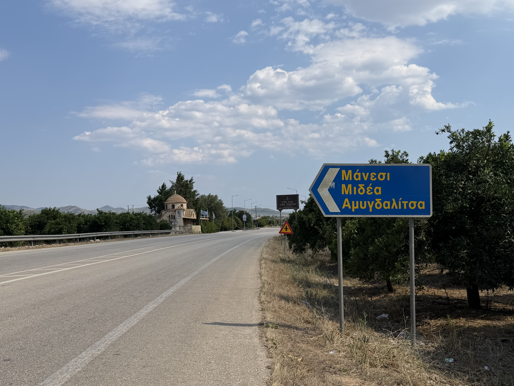

What are the Arvanitochoria?
Introduction to Arvanite settlements near Mt. Arachnaio.
Church of Agia Triada (Limnes)
The Holy Trinity Church in the village square of Limnes.

Introduction to Arvanite settlements near Mt. Arachnaio.
The Holy Trinity Church in the village square of Limnes.